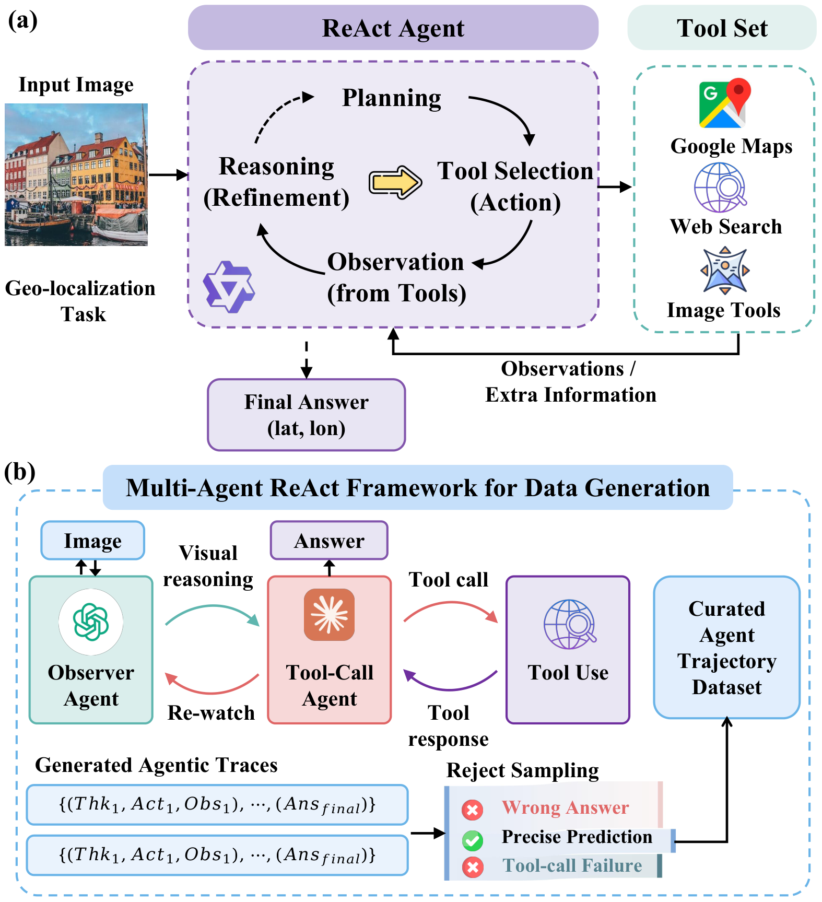
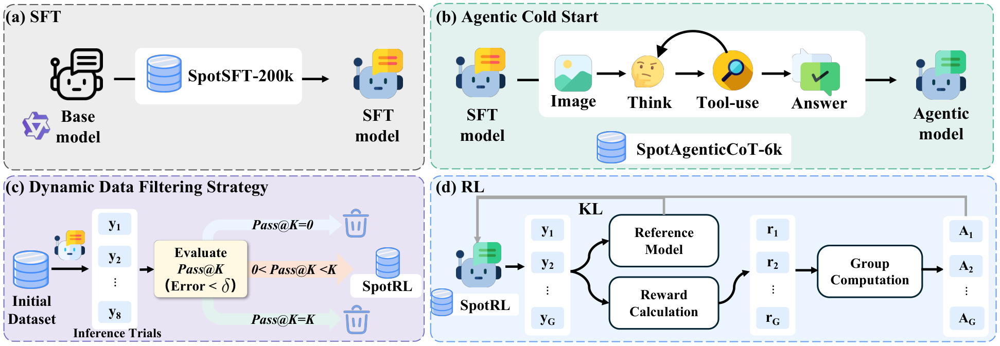
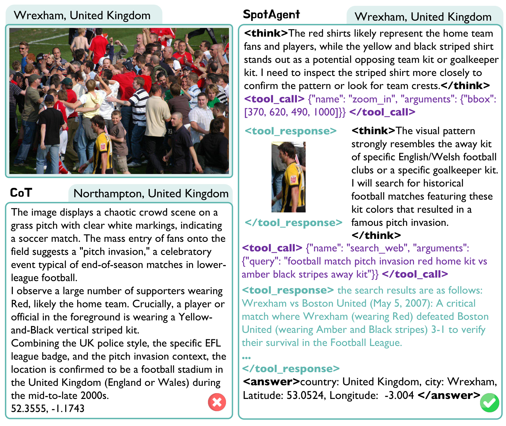
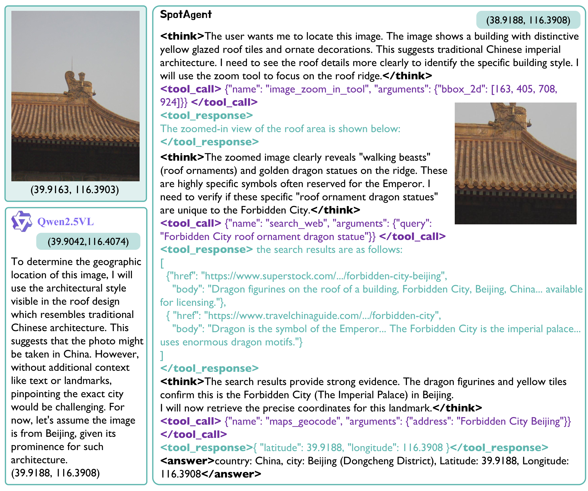
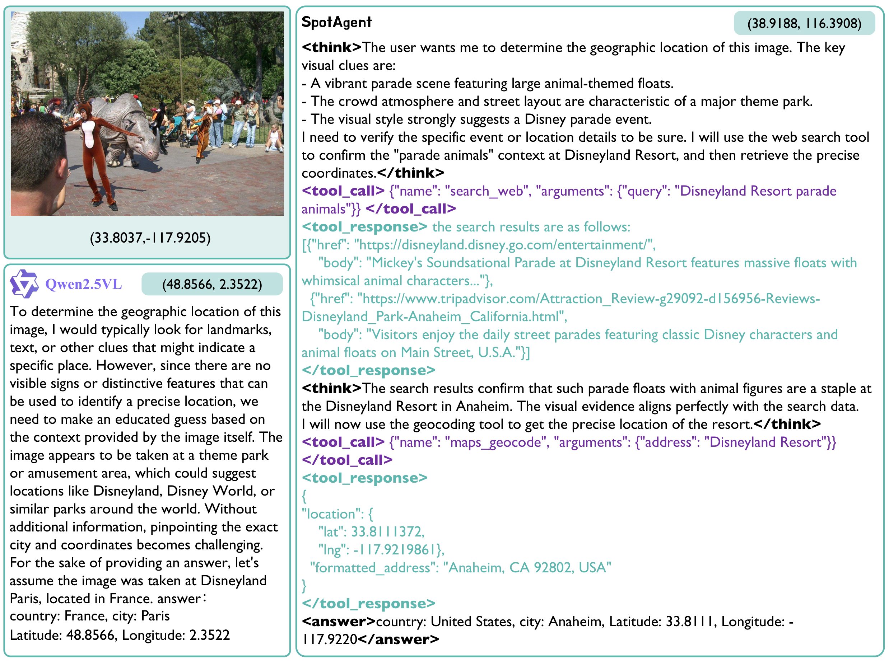

SpotAgent: Grounding Visual Geo-localization in Large Vision-Language Models through Agentic Reasoning
Abstract
Large Vision-Language Models (LVLMs) have demonstrated strong reasoning capabilities in geo-localization, yet they often struggle in real-world scenarios where visual cues are sparse, long-tailed, and highly ambiguous. Previous approaches, bound by internal knowledge, often fail to provide verifiable results, yielding confident but ungrounded predictions when faced with confounded evidence. To address these challenges, we propose SpotAgent, a framework that formalizes geo-localization into an agentic reasoning process that leverages expert-level reasoning to synergize visual interpretation with tool-assisted verification. SpotAgent actively explores and verifies visual cues by leveraging external tools (e.g., web search, maps) through a ReAct diagram. We introduce a 3-stage post-training pipeline starting with a Supervised Fine-Tuning (SFT) stage for basic alignment, followed by an Agentic Cold Start phase utilizing high-quality trajectories synthesized via a Multi-Agent framework, aiming to instill tool-calling expertise. Subsequently, the model's reasoning capabilities are refined through Reinforcement Learning. We propose a Spatially-Aware Dynamic Filtering strategy to enhance the efficiency of the RL stage by prioritizing learnable samples based on spatial difficulty. Extensive experiments on standard benchmarks demonstrate that SpotAgent achieves state-of-the-art performance, effectively mitigating hallucinations while delivering precise and verifiable geo-localization.
Video
Method
Inference & Data Generation Pipeline
SpotAgent formulates geo-localization as a sequential decision-making process rather than static reasoning. (a) Inference Pipeline: The agent operates in a ReAct loop—interleaving visual reasoning with tool execution. It can invoke external tools (Web Search, GeoCoding, Image Zoom-in) to gather verifiable evidence, iteratively refining its prediction. (b) Data Generation Pipeline: To bootstrap tool-calling capability, we employ a Multi-Agent framework: an Observer Agent performs structured visual scene interpretation, while a Tool-Call Agent conducts iterative evidence verification. Their collaboration synthesizes high-quality agentic trajectories for training.

Post-training Framework
We design a 3-stage post-training pipeline: (a) Supervised Fine-Tuning (SFT) aligns the base LVLM to geo-localization with image-coordinate pairs. (b) Agentic Cold Start instills tool-calling skills using trajectories from the Multi-Agent synthesis—the model learns to reason and invoke tools from evidence-rich demonstrations. (c) Dynamic Data Filtering selects learnable samples (neither trivial nor intractable) to improve RL efficiency. (d) Reinforcement Learning with GRPO and geodesic-distance rewards further refines reasoning toward fine-grained spatial accuracy.

Results: Case Study

CoT vs. Agentic Mode on Im2GPS3k: SpotAgent uses zoom-in and web search to pinpoint the 2007 Wrexham vs. Boston United match.

SpotAgent vs. Qwen2.5VL: SpotAgent zooms in on roof ornaments and achieves 0.28 km error (Forbidden City) vs. base model's 1.98 km.

SpotAgent vs. Qwen2.5VL: SpotAgent cross-references visual clues (e.g., parade floats) with web search for precise Disneyland Resort localization.
BibTeX
@article{spotagent2025,
title={SpotAgent: Grounding Visual Geo-localization in Large Vision-Language Models through Agentic Reasoning},
author={Jia, Furong and Dai, Ling and Deng, Wenjin and Zhang, Fan and Hu, Chen and Jiang, Daxin and Liu, Yu},
journal={arXiv preprint},
year={2025},
url={https://arxiv.org/pdf/2602.09463}
}